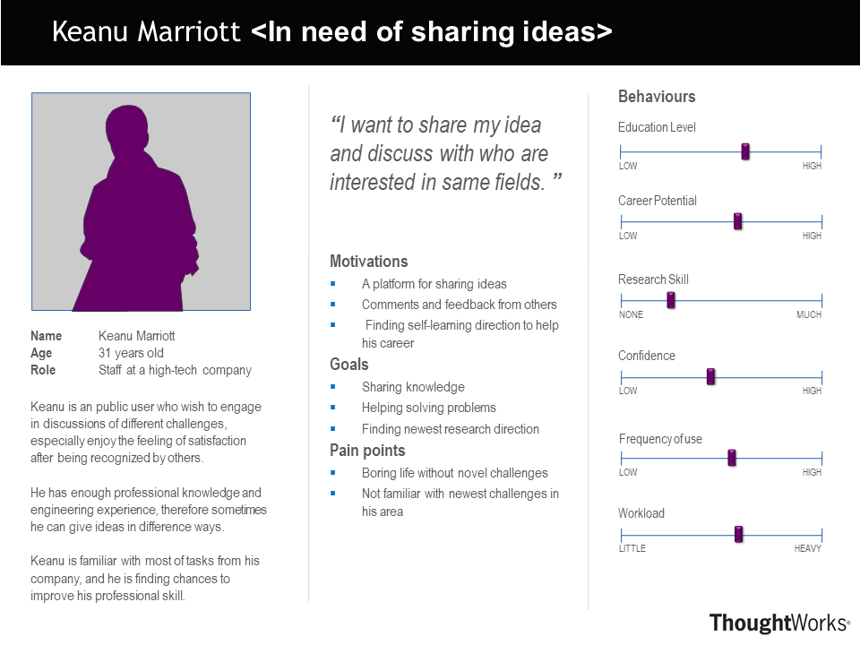
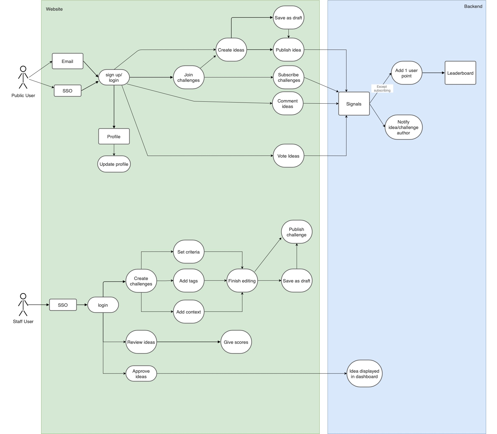

Project Background
Idea4U is an idea management website designed for UCL and NHS. It aims to provide a web-based idea-crowd-sourcing application that allows external stackholders to interact with the challenges that UCL/NHS trying to solve.
Project Goals
The main goals of our project include trying to maximize employee engagement on idea contribution. Because Employee ideas can be a powerful driver of improvements and innovation within any company. Most great ideas for enhancing and achieving business growth come from employees who are interacting with clients. They will have ideas/feedback on how to improve processes, customer service, product design or even some operational suggestions. Thus we have to encourage engagement of employees.
We also need to be able to address a specific problem area by posting challenges to quickly capture and manage useful problem solving strategies from users.
Another goal is having the ability to manage and organise feedback/ideas collected efficiently so that the better ideas with higher demands can be prioritised for planning and implementation.
We believe our application will help foster innovation and provide an efficient way to test UCL/IXN approach.
Requirements Gathering
In the first step of discovering requirements for our project, we arranged an online meeting with our clients to gather information on their goals, needs and context of use. By asking open-ended questions, we managed to capture more in depth information on the background of our users and the basic requirements of our project. In subsequent weekly meetings, we clarified any ambiguities and made the final MosCow list.
Following is a sample of questions we asked during the interview:
- What are the current ways of sourcing ideas in UCL and NHS?
- What would be the main functionalities/features of this portal?
- Who are the main users of this portal?
- In your opinion, what would be the perfect outcome of this project?
Using Interview :
|
From UCL Researcher: 1.What are the current ways of sourcing ideas in UCL and what are the problems encountered? For our current researches, we source ideas for a problem from a closed group of students using community forums and UCL extend. I hope to open these challenges to the public so they can engage with these problems and cocreate solutions. I have considered third party software's, but it is expensive due to the large number of user accounts that need to be created if we open to the public.
2. What functionalities are you looking for in this portal? We need to consider how to cope with the responses that we get, by having the public to vote on other people’s ideas, preferably according to some attributes such as efficiency, cost effectiveness and if idea is timely. Public should also be allowed to comment on ideas. To nudge people to interact with ideas, it would be nice to have a point system or leaderboard where contributors can be credited whenever they submit an idea, vote or comment on ideas. We can also have external moderators like experts from different industries related to the challenge to help evaluate the idea. |
Using Questionnaires :
After discovering requirements of challenge publishers, we move on to gather information from potential idea contributors by sending out questionnaires to collect quantitative and statistical data on the preference of features and design of the portal.
Likert scale questionnaires are used so that data can be easily analyzed by transforming them into statistical graphs.
Results :
Personas
We then created personas and scenarios based on the collected user data to represent the users’ motivation and behaviors.
This allowed us to have a clear vision of the type of users and avoid having a self-referential design instead of user centered design.

User Case Diagram
MOSCOW List
Non-functional requirements in blue.
MUST HAVE- Ideas can be created, retrieved, updated and deleted (CRUD)
- Challenges can be created, retrieved, updated and deleted (CRUD)
- Every user has an user profile (name, description, points, submitted ideas, subscribed challenges)
- UCL students and staffs can login by UCL SSO (Single Sign On) with UCL account credentials.
- Timeline for each challenge (publishing date, Ideas phase, voting phase, evaluation phase, feedback phase)
- Every registered user can vote ideas. Every single vote has equal weightage.
- Moderators evaluate the ideas based on criterias.
- Leaderboard
- Ideas/challenges are sorted based on popularity (number of votes/ideas) or date-posted
-
Notification engine
- - To notify users on interactions on their idea, updates on subscribed challenges and new challenges
- - To notify moderators when an idea is posted for reviewing
- Permissions for different type of users (common user, moderator and administrator)
- The project mush be security to store user data
- The project mush be well-documented
- The code review video must be understood by a first year MSc student
- Allow commenting on ideas
- Allow stakeholders to subscribe to a challenge to get updates
- Invitation to evaluate ideas
- Save idea/challenge drafts and edit later
- Challenges can be set to public or private
- Community guidelines for website
- Classify challenges and ideas by tags